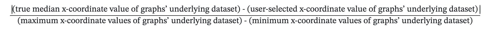
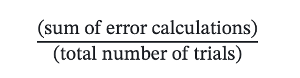

This project extends the part of our A3 experiment where we evaluate how accurately perceive the median of the underlying dataset of a histogram. For this experiment, we have 5 different types of visualizations: histograms, density plots, scatter plots, beeswarm plots, and bar charts. The overarching goal of our experiment here was to determine how different graphs may impact users' ability to accurately find the median of the underlying dataset being visualized. It should be noted that for the sake of simplifying both our experiment and the task presented to users, if the elements of datasets we made both had x-coordinate values and y-coordinate values, the users only had to find the median of the x-coordinate values of the dataset.
This experiment tested the following visualization types:
The table below shows the average error calculations for each of our visualizations. For all of the different charts, the original error metric calculated was the absolute difference between the true median x-coordinate value of the graphs' underlying dataset and the x-coordinate value of the graphs' underlying dataset that was selected by the user. However, we later found out that calculating the errors for each of our calculations this was was insufficient due to the range of the x-coordinate values of the graphs' underlying datasets being different. To address this issue, we normalized all of the obtained error calculations throughout our experiment by dividing all of them by the difference between the maximum and minimum x-coordinate values of their corresponding graphs' underlying datasets. Therefore, the final formula used for calculating the error calculations throughout the entire experiment was:
Once all of the normalized error calculations were calculated, we then grouped them all by their corresponding vsiaulization. After doing so, we were able to calculate the average error for each visualization by summing up all their corresponding normalized errors and then dividing the total by the number of trials conducted for that particular visualization. The formula representing this calculation for each visualization is:
| Visualization | Error |
|---|---|
| Alfreds Futterkiste | Maria Anders |
| Centro comercial Moctezuma | Francisco Chang |